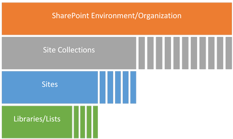
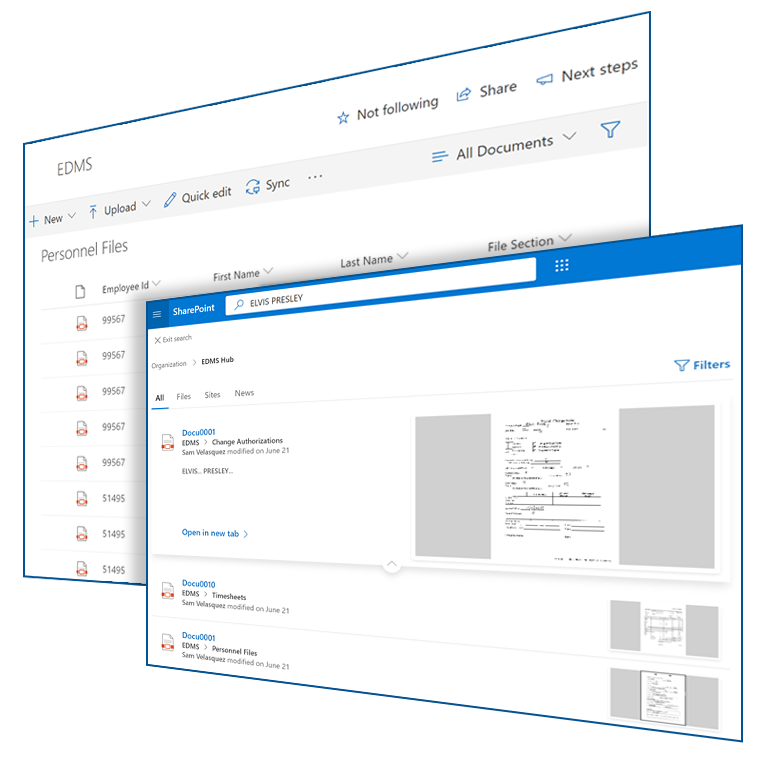
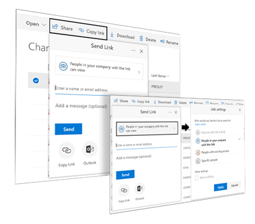

Build records and data solutions around the cloud platform you already own, instead of buying proprietary software that traps your data.
Section 01
Build Low Code Record and Data Solutions
Build records and data technology solutions around your current cloud platform. Don't buy proprietary software and hardware solutions that trap your data and increase your licensing costs.
Microsoft Office 365
Office 365 has been the de-facto standard for creating dynamic business documents and content. Why move documents out of Microsoft into a separate records and data management platform? We use your current Office 365 licenses to build powerful record and data management solutions around your current business process. Our low code solutions solve your immediate needs and provide unlimited future scalability.
Google Docs
Google Docs is used by many organizations for its simplicity and free license model. Google Drive provides a native cloud platform for dynamic business records and content creation. Using Google Docs and Google Drive, SyTech developers scale your Google platform into a simple records and data management solution.
Amazon
SyTech developers use Amazon Web Services (AWS) to build data platforms, especially when there is a need for connecting mobile devices or capturing electronic forms data. Amazon also provides business content capabilities using WorkDocs for collaboration and file sharing. WorkDocs can be extended in AWS for records and data management capabilities.
SharePoint Online
SharePoint Online is a collaboration platform within Office 365 that is being used extensively as both a dynamic and static repository for records and content management. SyTech developed the California state government standard for SharePoint Online content management and data delivery. If your organization already has existing repositories of electronic content, SyTech developers can quickly stand up SharePoint Online for full-feature document management or ECM (electronic content management). SharePoint Online is an ideal option to replace your current third-party document management software platform or to scale unlimited capabilities in your current environment.
Powerful Data and Records Management in Azure
Microsoft Azure is a cloud service used extensively by SyTech to create powerful data and records management applications. Simple records management problems use SyTech's 1DocStop, an Azure based records management repository. 1DocStop is ideal for small to medium size public agencies, like California K-12 School Districts. SyTech developers also use Azure to automate complex data processes in one single terminal location. SyTech's Azure data platforms are being used for criminal justice and child welfare (eSCARS); child support services (POP Data); land lease management (OSCAR); and natural resource management (Parks Digital). SyTech was one of the earliest adopters of Azure to build native cloud applications for California public agencies.
SyTech Tools and Applications
SyTech Tools and Applications are used by technology developers to scale and accelerate cloud data processes, workflows, and forms functionality. Tools and applications developed by SyTech shorten development time, save money, and solve complex technical problems. Tools, libraries, and applications are subscription-based and available in the Microsoft, Amazon, and Google Marketplaces. SyTech Tools automate data management, eForms, data migration, workflows, form processes, and compression. Add functionality only when you need it. SyTech platform tools accelerate your productivity, data processes, and shorten development cycles.
Section 02
SharePoint Online for ECM Delivery
Microsoft SharePoint Online is a collaboration platform within Office 365 that is being used extensively as both a dynamic and static repository for electronic content management (ECM). SharePoint Online is an ideal option to replace your current third-party document management software platform or to scale unlimited capabilities in your current environment. If your organization already has existing repositories of electronic content, SyTech developers can quickly stand up SharePoint Online for full-feature document management or ECM delivery.
Migrate Data from Records Management Software to SharePoint
Move your data and scanned records out of document management software into Microsoft SharePoint Online. Stop being limited by your software and expensive license costs.
SyTech uses SharePoint Online to build seamless records management and data collaboration repositories for public agencies, large and small. We leverage your existing Microsoft Office 365 licenses, which include SharePoint, to save money and eliminate proprietary document management software. Move your records forward, we can help.
Section 04
Don't Buy Records Management or More Enterprise Software
Buying software will not solve your records management or enterprise need. In fact, it is usually the single biggest technology mistake you can make. SyTech builds seamless records and data management in Office 365, SharePoint Online. We simplify data management delivery for public agencies, large and small, without expensive proprietary software. We use your existing technology environment to do amazing things!
Section 05
eForms Using Office 365 and SharePoint Online
Manage all your forms and workflow processes in your existing Office 365 platform.
Your staff has decades of experience using Microsoft Office for business records, email, and Excel spreadsheets. Did you know that SharePoint Online (SPS) is also a scalable (eForms) electronic forms solution?
SyTech solves any eForms problem, simple or complex. Quickly deploy eForms with basic SharePoint Designer and Generic Forms. Where the need is more complex (across multiple data sets and business processes), use InfoPath or Power Automate to stand up eForms across multiple data sets.
Generic Forms within SharePoint where only basic functionality is required
SharePoint Designer is a full suite of editing tools that allows you to work directly within SharePoint properties
InfoPath is a tool that can be used to build more complex forms, especially where multiple data sources are being used in eForms creation
Excel is used as a powerful interface to edit forms and organize data paths
Power Automate offers extensive capabilities and connectors in Power Automate Forms and Forms Pro
SharePoint Online for Any eForms Requirement, Simple or Complex
SharePoint Online works as a backend content management repository for both your scanned electronic files and (eForms) electronic forms data. SyTech uses SharePoint Online to bring all your scanned business documents and eForms together in one location. This even includes your files stored in Outlook and Teams.
Section 06
SharePoint Online Compared to On-Premise SharePoint for Electronic Records Management
SharePoint Online is officially classified as a hosted content management and collaboration platform. While Microsoft works to keep feature parity between SharePoint Online and SharePoint on-premise, there are some distinct differences that benefit SharePoint Online for use as an electronic records management solution (ERMS) platform.
SharePoint includes several core components critical to the design of an ERMS running on SharePoint (SharePoint Environment / Organization):

SharePoint Environment / Organization
An Electronic Records Management System (ERMS) provides for management of electronic record life-cycles including storage, search, sharing, retention, permissions, versioning, auditing, and reporting.
All these functions are available as features in SharePoint Online and are relatively easy to configure when compared with other single-purpose ERMS platforms.
Extensibility, a function that is not readily available in most single-purpose ERMS systems, comes built in, making SharePoint Online the best solution for management of enterprise and/or institutional documents.
Section 07
Technical Considerations
SharePoint Online has been optimized to run on Microsoft's Azure cloud platform. This allows for massive scalability over locally installed instances of SharePoint. For example, files saved to SharePoint Online are chunked, encrypted, and stored in Azure Blob Storage instead of writing to the SQL database as blob data. This allows for cheaper scaling when compared to previous versions of SharePoint.
SharePoint provides advanced search capabilities based on a user's access rights. Users can only search for files they have permission to access. There are two ways a user can search for files within SharePoint:
Enterprise Level
The Enterprise Level search will search for files across all libraries in the system using the metadata typed in the search bar at the top of the screen on the dashboard. This will pull all files you have access to in the system that match the metadata used in the search.
Library Level
The Library Level search will search for files within a specific library. Open the library you'd like to search, then either type the metadata attached to the file in the search bar at the top of the screen or scroll through the list of files that have been loaded into the library to find the file you are looking for.

Advanced Search in SharePoint
Share Records
Files stored in SharePoint can be shared from within their library. Sharing files has never been easier. Using the built-in sharing feature, users can enter the recipient's email address(es) in their action bar to send the recipient an email with a link to the document.
Users can also share a link provided by the system, and use that link to copy and paste into a personalized email. Depending on the type of file, the link settings may be adjusted to specify who the link works for and whether the link will allow editing.
NOTE: Only those with permission can access shared links. The ability to adjust these settings depends on the user's permissions.

Share Records in SharePoint
Scenarios
Low Code in Practice.
We run a lot of IT projects with different funding requirements. Is there one place to track them and report out?
There is, and it can be built where your project data already lives. A county told us it had numerous IT projects underway, each carrying funding requirements that needed meticulous tracking throughout the life cycle, and that it could not find a central application to manage the process or to report to stakeholders. The process they wanted to run was PAL, the Project Application Life Cycle — structured planning, execution, and monitoring. We built low-code solutions inside their existing Microsoft products, and each project is now overseen in correspondence with PAL. Watch the county describe it.
What does a rebuilt Microsoft Access application look like on the Microsoft stack?
It looks like the same process without the failure points. A county told us its Access application was critical to operations, continually disrupted workflow, caused frequent downtime, and locked remote workers out of essential data because it could not connect in the cloud. We built low-code solutions inside the Microsoft ecosystem the county already owned: field-level security, role-based access, and advanced workflows, reachable by staff wherever they work. Watch the county describe the system they run now.